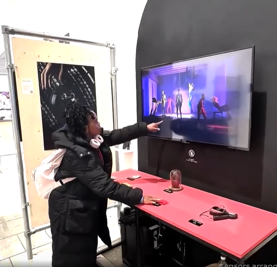
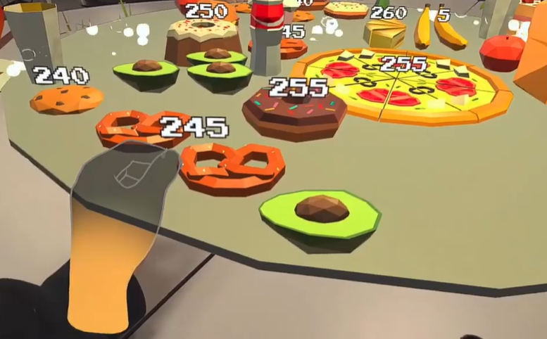
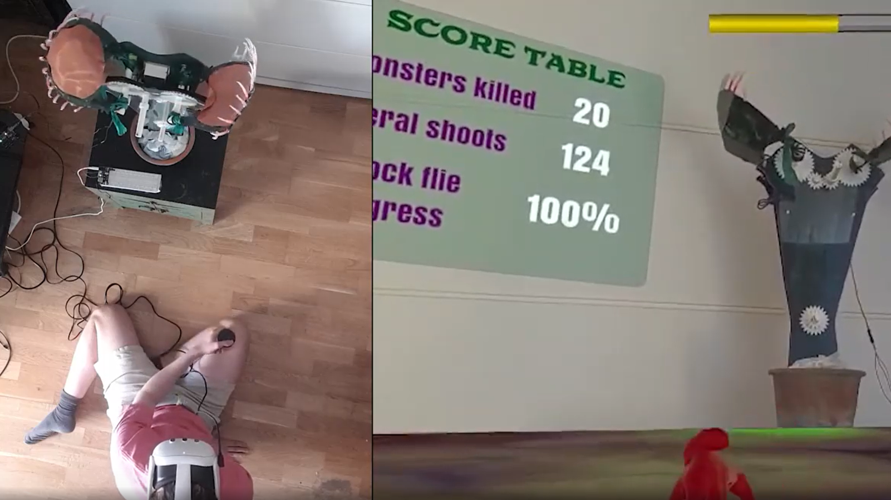
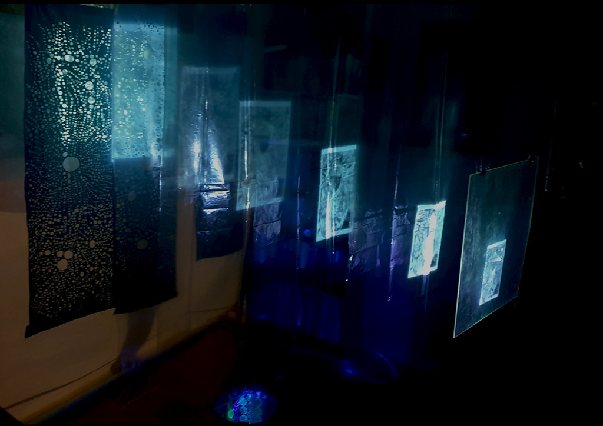
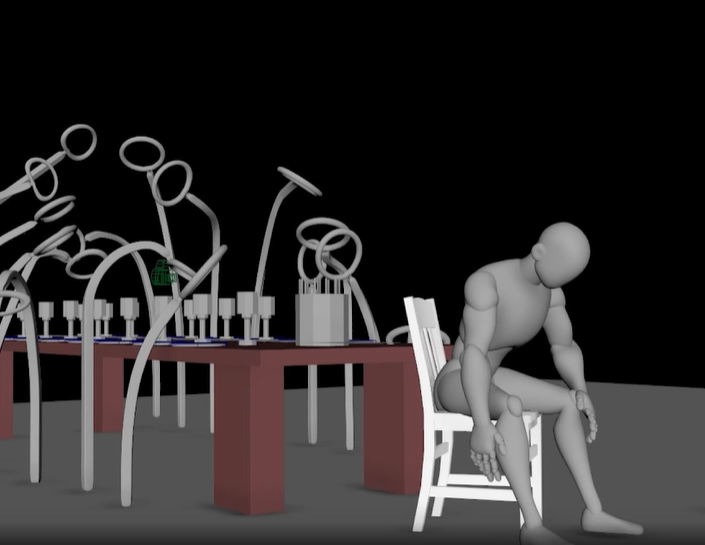
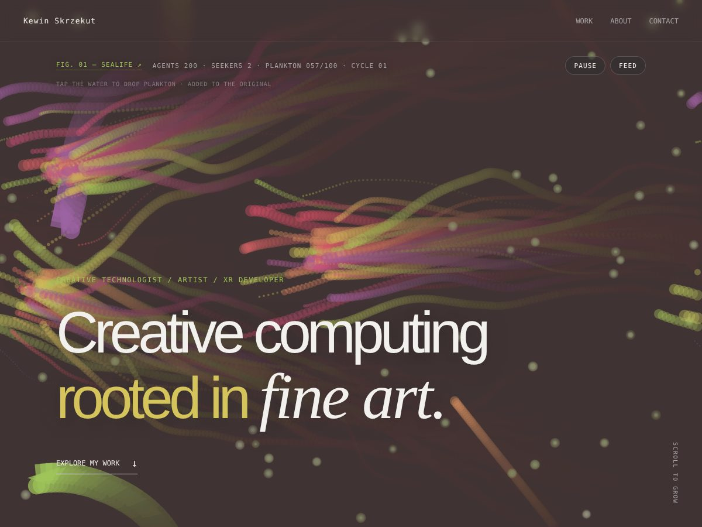
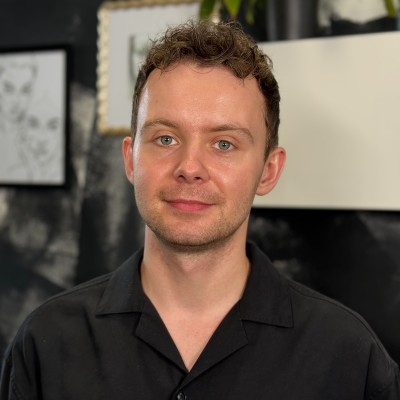

01INTERACTION / GENERATIVE
When Worlds Collide
An experimental interactive system exploring recursive growth and human interaction.
View project →CREATIVE TECHNOLOGIST / ARTIST / XR DEVELOPER
I build interactive, data-driven, real-time installations, applications and gamified systems that turn the audience’s body into an interface—giving them agency to become an integral part of the work.
Through interaction and gameplay, I create experiences that invite participation, learning and awareness.

01INTERACTION / GENERATIVE
An experimental interactive system exploring recursive growth and human interaction.
View project →
02MIXED REALITY GAME / CLIMATE CHANGE / LEARNING THROUGH GAME PLAY / COLLABORATIVE WORK
A computational exploration of symmetry, repetition and emergent visual structures.
View project ↗
03MIXED REALITY / ROBOTICS / PHYSICAL COMPUTING/ DIGITAL PUPPETEERING
An evolving visual environment generated from simple rules and recursive behaviours.
View project →
04EXPERIMENT / SYSTEM
An evolving visual environment generated from simple rules and recursive behaviours.
View project →
05EXPERIMENT / MOTION CPATURE
An evolving visual environment generated from simple rules and recursive behaviours.
View project ↗
06AUTONOMOUS AGENTS / FLOCKING / P5.JS
Flocking and seeking, written in p5.js: 200 fish following three simple rules and two larger agents hunting plankton. It is the piece running at the top of this page.
View project →
I am a designer and creative technologist interested in the space between design, technology and computation.
My practice explores generative systems, interaction, visual experimentation and digital experiences.
I enjoy creating systems where the final outcome isn't completely predetermined, but emerges through rules, interaction and time.